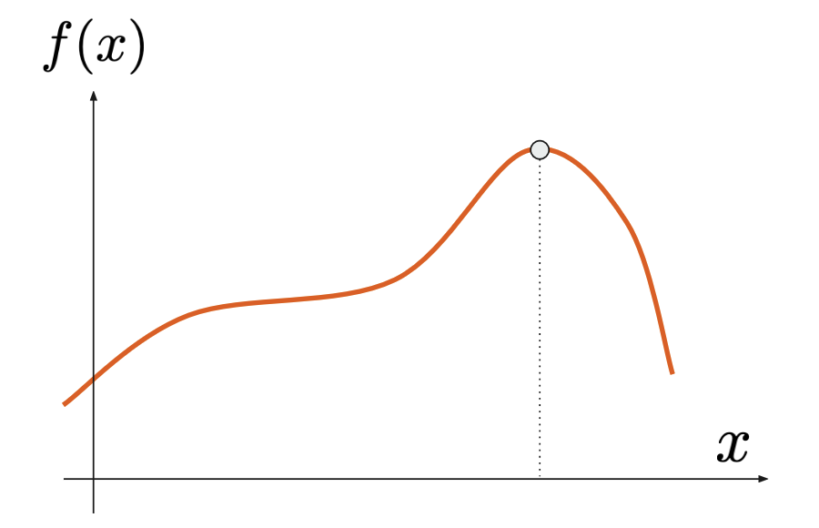
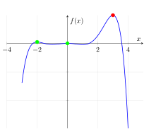
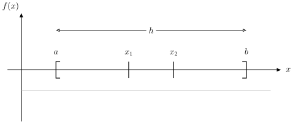
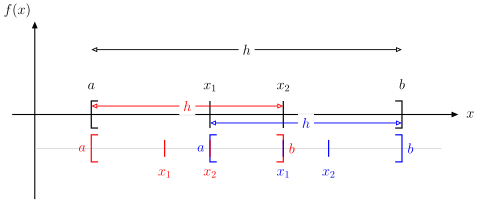

Lecture 21
E21 Computer Engineering Fundamentals
Emad Masroor
November 17, 2026
New Topic
Optimization
Finding a minimum (or maximum) in design-variable space
- Suppose an engineering problem consists of specifying \(n\) ‘design variables’.
- Our goal might be to minimize (or maximize) an ‘objective function’ \[f(X_1,X_2,...,X_n): \mathbb{R}^n \rightarrow \mathbb{R}\]
- Find the set of variables \(\{ X_1, X_2, ..., X_n \}\) that minimizes \(f\) \[\nabla f = 0\]
- where \(\nabla \equiv \begin{bmatrix} \partial/\partial X_1 \\ \partial/\partial X_2 \\ \vdots \\ \partial / \partial X_n \end{bmatrix}\)
The relationship between optimization and root-finding
- The two are closely related at a conceptual level
- Minimizing (i.e., optimizing) \(f(x)\) is the same thing as finding a root of \(f'(x)\)
- If the derivative of the objective function is available, you can search for the root of \(f'(x)\) or you can search for an optimum of \(f(x)\) — the two are equivalent
Expensiveness of functions
- In engineering, the ‘objective function’ is often an ‘expensive’ function to compute
- Optimization algorithms seek to minimize the number of function calls to be efficient
Single-variable optimization
Find \(x\) that maximizes (or minimizes) \(f(x)\)

- Techniques:
- Bracketing
- Golden Section Search
Global vs. Local

- Green points are local maxima
- Red is global maximum
Bracketing
to find a maximum in \(f(x)\)
- Pick some \(x_0\)
- Increment \(x_0 \rightarrow x_1 \rightarrow x_2 \rightarrow x_3 \rightarrow \dots\) in direction of increasing \(f(x)\)
- Keep only the last two in memory
- Increment strategies?
- Constant increment \(0.1, 0.2, 0.3, 0.4, ...\)
- Increasing increment \(0.1, 0.2, 0.4, 0.8,...\)
- Decreasing increment \(0.1, 0.2, 0.25, 0.26, ...\)
- When \(f(x_{n}) < f(x_{n-1})\), you have successfully bracketed the maximum between \(x_{n-1}\) and \(x_n\).
Python function for bracketing
Write a program that brackets a minimum of the following function \[f(x) = -10 x^6 + 12 x^5 + 100 x^4 - 19 x^3 - 300 x\]
- starting from \(x=-4\) using positive \(0.1\) increments
- starting from \(x=+4\) using negative \(0.1\) increments
Golden Section Search
- Uses the properties of the Golden Ratio \[R = \frac{-1 + \sqrt{5}}{2} \approx 0.618...\]
- After a maximum has been isolated to be between \(x=a\) and \(x=b\), where \(h=b-a\) is the window size
- Define the new points \[ \begin{aligned}x_1 &= b - Rh \\ x_2 &= a + Rh \end{aligned}\]


To find a maximum of \(f(x)\)
If \(f(x_1) > f(x_2)\), then discard \([x_2,b]\) and use new bracket \({\color{red}{[a, x_2 ]}}\).
If \(f(x_1) < f(x_2)\), then discard \([a,x_2]\) and use new bracket \({\color{blue}{[x_1, b ]}}\).
Practice with Golden Section Search
Locate a maximum of the function \[f(x) = \sin 2x\] in the region \([0,1]\) using steps of the Golden Section Search method.
Multi-dimensional optimization
Find the minimimum of \[f(x,y) = (x-1)^2 + (y+1)^2 + xy\]
- Idea: pick some direction vectors in \((x,y)\) space and optimize along each direction
- Direction vectors should span the entire space, i.e., need as many independent (non-parallel) direction vectors as there are design variables.

E21 • Fall 2026 • Lecture 21 • November 17, 2026 • ↩︎